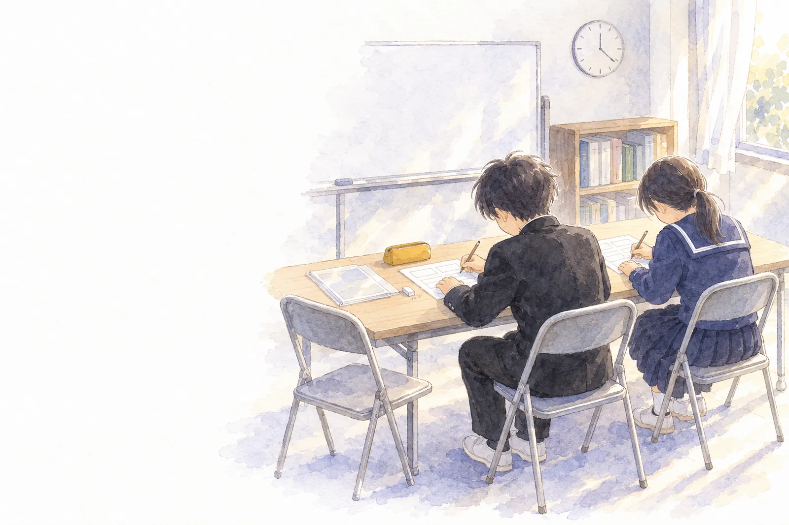
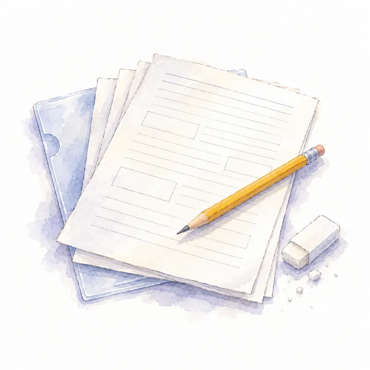
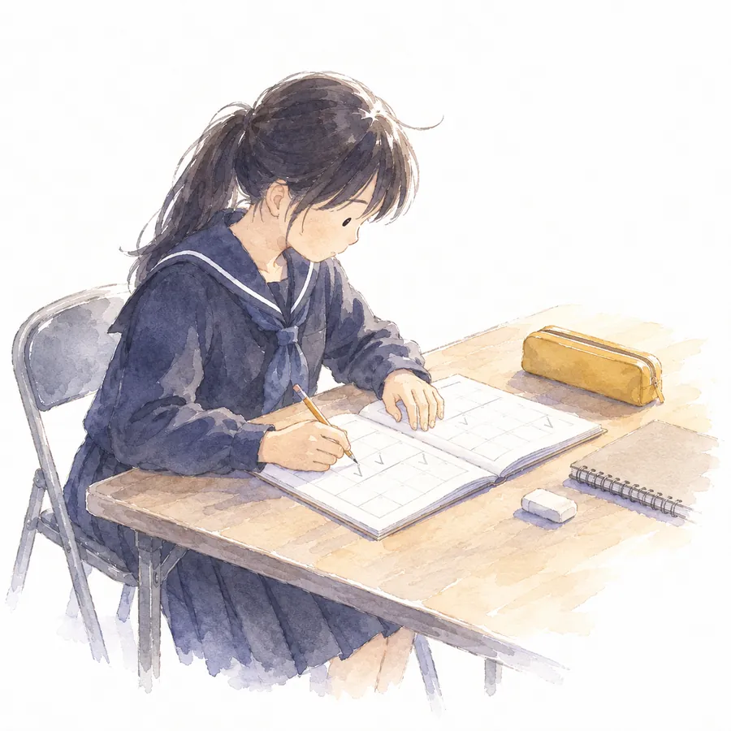

01PRINTS
プリントをさがす
学年と教科を選んでから、ダウンロードの形を選んでください。1枚ずつでも、章ごとにまとめてでも保存できます。プリントは、田川地区の中学校で使っている教科書の単元の順に並べています。

学年
教科
形

02STUDY PLAN
自習計画をつくる
名前・目標・期間・時間・内容を入れると、計画表がその場でできあがります。できた計画表は、PDFや画像にして保存したり、LINEで送ったりできます。
入れた名前や計画は、このブラウザの中にだけ保存されます。インターネットには送られません。
03HOW TO
使い方
-
STEP 1
選ぶ
学年、教科、形を選んで、プリントを保存します。章ごとにまとめて保存することもできます。
-
STEP 2
解く
印刷して解きます。答えつきや答えだけの形を使うと、自分で丸つけができます。
-
STEP 3
続ける
自習計画を作り、勉強した日に「できた」の印をつけます。計画表は、画像やPDFにしてLINEで送れます。
- 印刷するとき
- 用紙はA4、倍率は100％（実際のサイズ）にして印刷してください。
- LINEの中で開いたとき
- 保存がうまくいかないことがあります。そのときは、メニューの「ブラウザで開く」を選んでください。
- 保存したファイルの場所
- iPhoneやiPadでは、「ファイル」アプリの「ダウンロード」に入ります。Androidでは、「ファイル」アプリなどの「ダウンロード」に入ります。
今日の自習、おつかれさまでした。